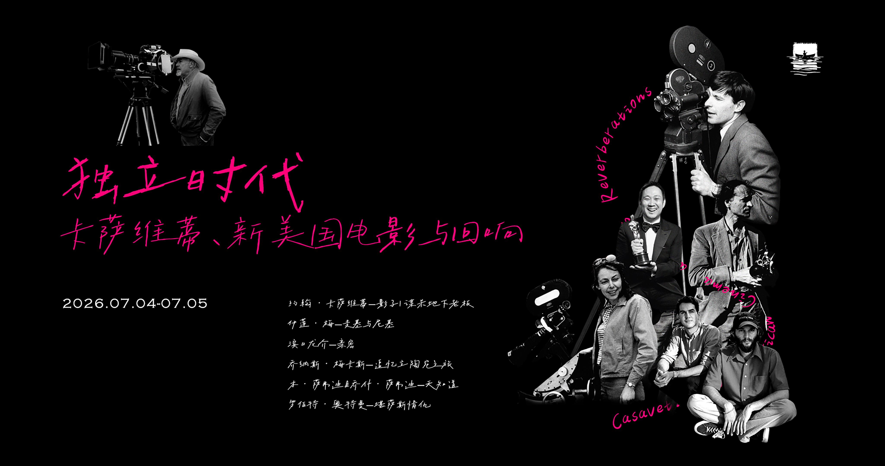

Cassavetes and His Echoes
This program begins with John Cassavetes, the improvisatory fire of Shadows and the nocturnal desperation of The Killing of a Chinese Bookie, and traces his restless spirit through the work of filmmakers who inherited his commitment to raw, unguarded human truth. Elaine May's Mikey and Nicky unleashes two of Cassavetes' own actors into a long night of betrayal; the Safdie Brothers' Heaven Knows What channels his street-level intensity into the chaos of addiction; Altman's Kansas City swings with his improvisatory nerve; Mekas's Reminiscences of a Journey to Lithuania shares his deeply personal mode of filmmaking; and Hamaguchi's Intimacies extends his faith that performance can reveal what life conceals. Seven films, one shared conviction: the camera belongs closest to the human face.